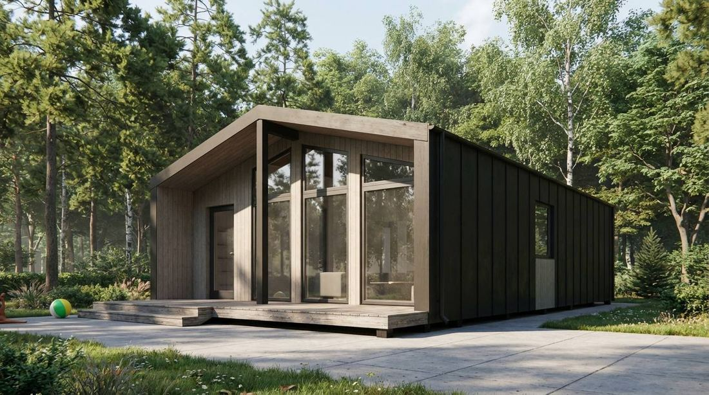
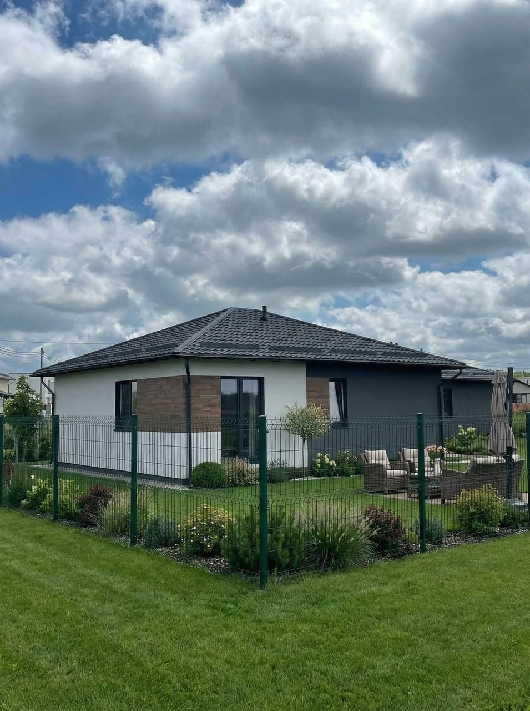

Мы сознательно работаем с двумя технологиями, а не с десятью. В каждой из них у нас набита рука, есть свои бригады и понятная себестоимость — поэтому мы можем зафиксировать цену в договоре и не пересматривать её.
Правильный каркасный дом — это не временная постройка. Это полноценное круглогодичное жильё, которое в Калининградской области отапливается дешевле блочного дома той же площади. Каркас не промерзает зимой при условии, что соблюдены толщина утеплителя, пароизоляция и вентзазор — именно на этих узлах экономят недобросовестные подрядчики, и именно их мы не трогаем никогда. Сюда же относятся дома из СИП-панелей: это тот же каркасный принцип, только контур собирается из готовых утеплённых панелей, за счёт чего коробка встаёт ещё быстрее.

Газосиликат — основной материал большинства наших проектов. Блок держит тепло, не горит, не интересен грызунам и плесени. Дом из газосиликата тяжелее каркасного, поэтому требует более серьёзного фундамента — зато служит дольше и лучше держит температуру в межсезонье, что для балтийского климата с его перепадами имеет значение. Если вы строите дом «на всю жизнь» и не считаете срок окупаемости — это ваш вариант.

Каждый этап закрывается приёмкой, сроки фиксируются в договоре. Вы всегда знаете, на какой стадии находится ваш дом и что происходит на площадке на этой неделе.
Обсуждаем ваши пожелания и требования, консультируем по планировке и выбору материалов. Разбираем участок: что на нём можно построить, какие есть ограничения, во сколько это обойдётся.
Расчистка участка, выемка грунта, геодезическая разбивка осей. Оцениваем тип грунта и рельеф — от этого напрямую зависит выбор фундамента и его стоимость.
В зависимости от типа грунта и проектируемого здания выбираем оптимальный вариант: ленточный, плитный или столбчатый. Выдерживаем технологические паузы — на этом этапе спешка недопустима.
Работаем с газобетоном и древесиной. На этом же этапе выполняется монтаж оконных и дверных проёмов. Появляется объём — дом впервые становится похож на дом.
Стропильная система, гидро- и пароизоляция, кровельное покрытие. Применяем качественные материалы: кровля обеспечивает не только защиту контура, но и внешний вид дома.
Электрика, водоснабжение, отопление. Обеспечиваем надёжную проводку и соответствие всех систем действующим стандартам. Скрытые работы фиксируем фотоотчётом до закрытия.
Отделочные работы внутри, затем фасад: утепление, декоративная отделка, обустройство ландшафта. Финальный облик дома формируется здесь.
Финальная проверка по всем узлам, устранение замечаний, передача документов и гарантийных обязательств. Вы получаете дом, в который можно въезжать.
Разберём ваш участок и бюджет на консультации — без обязательств и давления.